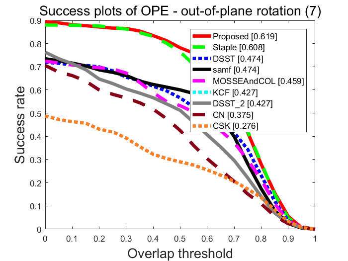

clear
close all;
clc
addpath('./util');
attPath = '.\anno\att\';
attName={'illumination variation' 'out-of-plane rotation' 'scale variation' 'occlusion' 'deformation' 'motion blur' 'fast motion' 'in-plane rotation' 'out of view' 'background clutter' 'low resolution'};
attFigName={'illumination_variations' 'out-of-plane_rotation' 'scale_variations' 'occlusions' 'deformation' 'blur' 'abrupt_motion' 'in-plane_rotation' 'out-of-view' 'background_clutter' 'low_resolution'};
plotDrawStyleAll={ struct('color',[1,0,0],'lineStyle','-'),...
struct('color',[0,1,0],'lineStyle','-'),...
struct('color',[0,0,1],'lineStyle','-'),...
struct('color',[0,0,0],'lineStyle','-'),...
struct('color',[1,0,1],'lineStyle','-'),...
struct('color',[0,1,1],'lineStyle','-'),...
struct('color',[0.5,0.5,0.5],'lineStyle','-'),...
struct('color',[136,0,21]/255,'lineStyle','-'),...
struct('color',[255,127,39]/255,'lineStyle','-'),...
struct('color',[0,162,232]/255,'lineStyle','-'),...
struct('color',[163,73,164]/255,'lineStyle','-'),...
struct('color',[1,0,0],'lineStyle','--'),...
struct('color',[0,1,0],'lineStyle','--'),...
struct('color',[0,0,1],'lineStyle','--'),...
struct('color',[0,0,0],'lineStyle','--'),...
struct('color',[1,0,1],'lineStyle','--'),...
struct('color',[0,1,1],'lineStyle','--'),...
struct('color',[0.5,0.5,0.5],'lineStyle','--'),...
struct('color',[136,0,21]/255,'lineStyle','--'),...
struct('color',[255,127,39]/255,'lineStyle','--'),...
struct('color',[0,162,232]/255,'lineStyle','--'),...
struct('color',[163,73,164]/255,'lineStyle','--'),...
struct('color',[1,0,0],'lineStyle','-.'),...
struct('color',[0,1,0],'lineStyle','-.'),...
struct('color',[0,0,1],'lineStyle','-.'),...
struct('color',[0,0,0],'lineStyle','-.'),...
struct('color',[1,0,1],'lineStyle','-.'),...
struct('color',[0,1,1],'lineStyle','-.'),...
struct('color',[0.5,0.5,0.5],'lineStyle','-.'),...
struct('color',[136,0,21]/255,'lineStyle','-.'),...
struct('color',[255,127,39]/255,'lineStyle','-.'),...
struct('color',[0,162,232]/255,'lineStyle','-.'),...
struct('color',[163,73,164]/255,'lineStyle','-.'),...
};
plotDrawStyle10={ struct('color',[1,0,0],'lineStyle','-'),...
struct('color',[0,1,0],'lineStyle','--'),...
struct('color',[0,0,1],'lineStyle',':'),...
struct('color',[0,0,0],'lineStyle','-'),...
struct('color',[1,0,1],'lineStyle','--'),...
struct('color',[0,1,1],'lineStyle',':'),...
struct('color',[0.5,0.5,0.5],'lineStyle','-'),...
struct('color',[136,0,21]/255,'lineStyle','--'),...
struct('color',[255,127,39]/255,'lineStyle',':'),...
struct('color',[0,162,232]/255,'lineStyle','-'),...
};
seqs=configSeqs;
trackers=configTrackers;
numSeq=length(seqs);
numTrk=length(trackers);
nameTrkAll=cell(numTrk,1);
for idxTrk=1:numTrk
t = trackers{idxTrk};
nameTrkAll{idxTrk}=t.namePaper;
end
nameSeqAll=cell(numSeq,1);
numAllSeq=zeros(numSeq,1);
att=[];
for idxSeq=1:numSeq
s = seqs{idxSeq};
nameSeqAll{idxSeq}=s.name;
s.len = s.endFrame - s.startFrame + 1;
numAllSeq(idxSeq) = s.len;
att(idxSeq,:)=load([attPath s.name '.txt']);
end
attNum = size(att,2);
figPath = '.\figs\overall\';
perfMatPath = '.\perfMat\overall\';
if ~exist(figPath,'dir')
mkdir(figPath);
end
if ~exist(perfMatPath,'dir')
mkdir(perfMatPath);
end
metricTypeSet = {'error', 'overlap'};
evalTypeSet = {'OPE'};
rankingType = 'AUC';
rankNum = 10;
if rankNum == 10
plotDrawStyle=plotDrawStyle10;
else
plotDrawStyle=plotDrawStyleAll;
end
thresholdSetOverlap = 0:0.05:1;
thresholdSetError = 0:50;
for i=1:length(metricTypeSet)
metricType = metricTypeSet{i};
switch metricType
case 'overlap'
thresholdSet = thresholdSetOverlap;
rankIdx = 11;
xLabelName = 'Overlap threshold';
yLabelName = 'Success rate';
case 'error'
thresholdSet = thresholdSetError;
rankIdx = 21;
xLabelName = 'Location error threshold';
yLabelName = 'Precision';
end
if strcmp(metricType,'error')&strcmp(rankingType,'AUC')
continue;
end
tNum = length(thresholdSet);
for j=1:length(evalTypeSet)
evalType = evalTypeSet{j};
plotType = [metricType '_' evalType];
switch metricType
case 'overlap'
titleName = ['Success plots of ' evalType];
case 'error'
titleName = ['Precision plots of ' evalType];
end
dataName = [perfMatPath 'aveSuccessRatePlot_' num2str(numTrk) 'alg_' plotType '.mat'];
if ~exist(dataName)
genPerfMat(seqs, trackers, evalType, nameTrkAll, perfMatPath);
end
load(dataName);
numTrk = size(aveSuccessRatePlot,1);
if rankNum > numTrk | rankNum <0
rankNum = numTrk;
end
figName= [figPath 'quality_plot_' plotType '_' rankingType];
idxSeqSet = 1:length(seqs);
plotDrawSave(numTrk,plotDrawStyle,aveSuccessRatePlot,idxSeqSet,rankNum,rankingType,rankIdx,nameTrkAll,thresholdSet,titleName, xLabelName,yLabelName,figName,metricType);
attTrld = 0;
for attIdx=1:attNum
idxSeqSet=find(att(:,attIdx)>attTrld);
if length(idxSeqSet) < 2
continue;
end
disp([attName{attIdx} ' ' num2str(length(idxSeqSet))])
figName=[figPath attFigName{attIdx} '_' plotType '_' rankingType];
titleName = ['Plots of ' evalType ': ' attName{attIdx} ' (' num2str(length(idxSeqSet)) ')'];
switch metricType
case 'overlap'
titleName = ['Success plots of ' evalType ' - ' attName{attIdx} ' (' num2str(length(idxSeqSet)) ')'];
case 'error'
titleName = ['Precision plots of ' evalType ' - ' attName{attIdx} ' (' num2str(length(idxSeqSet)) ')'];
end
plotDrawSave(numTrk,plotDrawStyle,aveSuccessRatePlot,idxSeqSet,rankNum,rankingType,rankIdx,nameTrkAll,thresholdSet,titleName, xLabelName,yLabelName,figName,metricType);
end
end
end
soccer CSK
soccer Staple
soccer DSST
soccer KCF
soccer Proposed
soccer MOSSEAndCOL
soccer samf
soccer DSST_2
soccer CN
carScale CSK
carScale Staple
carScale DSST
carScale KCF
carScale Proposed
carScale MOSSEAndCOL
carScale samf
carScale DSST_2
carScale CN
david CSK
david Staple
david DSST
david KCF
david Proposed
david MOSSEAndCOL
david samf
david DSST_2
david CN
crossing CSK
crossing Staple
crossing DSST
crossing KCF
crossing Proposed
crossing MOSSEAndCOL
crossing samf
crossing DSST_2
crossing CN
basketball CSK
basketball Staple
basketball DSST
basketball KCF
basketball Proposed
basketball MOSSEAndCOL
basketball samf
basketball DSST_2
basketball CN
david3 CSK
david3 Staple
david3 DSST
david3 KCF
david3 Proposed
david3 MOSSEAndCOL
david3 samf
david3 DSST_2
david3 CN
woman CSK
woman Staple
woman DSST
woman KCF
woman Proposed
woman MOSSEAndCOL
woman samf
woman DSST_2
woman CN
carDark CSK
carDark Staple
carDark DSST
carDark KCF
carDark Proposed
carDark MOSSEAndCOL
carDark samf
carDark DSST_2
carDark CN
couple CSK
couple Staple
couple DSST
couple KCF
couple Proposed
couple MOSSEAndCOL
couple samf
couple DSST_2
couple CN
motorRolling CSK
motorRolling Staple
motorRolling DSST
motorRolling KCF
motorRolling Proposed
motorRolling MOSSEAndCOL
motorRolling samf
motorRolling DSST_2
motorRolling CN
illumination variation 6
out-of-plane rotation 7
scale variation 7
occlusion 6
deformation 6
motion blur 4
fast motion 5
in-plane rotation 4
background clutter 7
